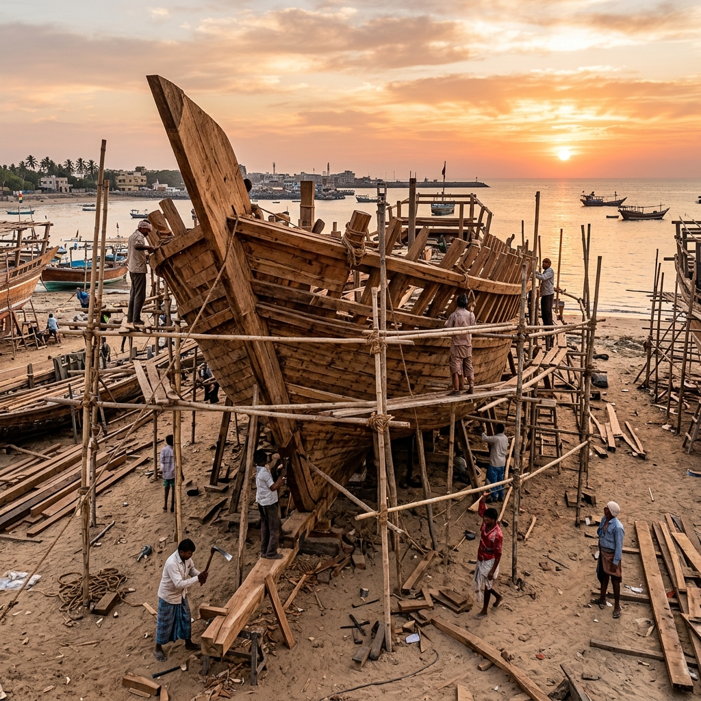

Mandvi Ancient Port Explorer
Step onto the banks of the Rukmavati River, where the 400-year-old tradition of handcrafting wooden cargo vessels lives on. Explore the stories of Kutch's brave mariners who mapped trading routes across the Arabian Sea.
Mandvi Ancient Port Explorer
Step onto the banks of the Rukmavati River, where the art of hand-crafting wooden cargo vessels has survived for over 400 years. Follow the story of Kutch's fearless mariners who charted trading lanes across the Arabian Sea.
A Gateway Between the Desert and the Sea
Founded in 1574 by Rao Khengarji I, the first Jadeja ruler of Kutch, Mandvi was built as a fortified port town on the mouth of the Rukmavati River. Hemmed in by the vast salt wastes of the Rann to the north and east, the rulers of Kutch looked towards the Arabian Sea for access to the wider world.
By the 18th century, Mandvi had grown into one of the most important trading ports of western India. Protected by massive stone fortifications and backed by a sovereign shipyard, it hosted fleets of hundreds of merchant vessels and welcomed traders from Arabia, East Africa and beyond.
👑 Rao Khengarji's Vision
- Est. 1574 — Port founded at the mouth of the Rukmavati River.
- Kutchi Sovereignty — Developed independently of the Mughal empire and European trading companies.
- Merchant Haven — Guaranteed protection, tax relief and naval escorts to mariners, attracting elite trading families.
400 years of Handcrafted Shipwrights
Mandvi remains one of the world's last active traditional wooden shipbuilding centers, where dhow cargo ships are built entirely by hand.
No Written Blueprints
Master builders (Mistrys) design these ships entirely using oral tradition, wooden scale rules, and mental geometry passed down through generations.
Teak & Sal Woods
Hulls are built from imported Malaysian Sal and teak timber, fastened together using high-strength steel spikes and caulked with coconut fiber and oil.
The Kotia Dhow
The signature double-ended cargo vessel of Kutch, ranging from 100 to 1,000 tons in capacity, built specifically to navigate the Arabian Sea currents.
Four Centuries of Handcrafted Shipwrights
Mandvi remains one of the world's last active centres of traditional wooden shipbuilding, where dhows are assembled entirely by hand.
No Written Blueprints
Master builders — the Mistrys — design entire vessels using oral tradition, wooden scale rules and mental geometry passed down through generations.
Teak & Sal Timber
Hulls are built from imported Malaysian sal and teak, fastened with steel spikes and sealed watertight with coconut fibre and oil.
The Kotia Dhow
The signature double-ended cargo vessel of Kutch — from 100 to 1,000 tons — designed to ride the strong currents of the Arabian Sea.
Linking India to Zanzibar and Muscat
Mandvi's geography made it a natural hub for deep-sea navigation. Riding the monsoon winds, Kutchi sailors departed in winter for Muscat, Aden and Zanzibar, returning with the summer breezes.
Kutchi Bhatias and Muslim traders built elaborate mercantile networks, founding permanent trading houses in Zanzibar and Muscat, where they served as financiers, customs officers and brokers — cementing Kutch's place as an economic powerhouse of the Indian Ocean world.
🗺️ Indian Ocean Trade Routes
- East Africa (Zanzibar, Mombasa) — Grains and cotton exchanged for ivory, cloves and timber.
- Persian Gulf (Muscat, Aden) — Spices and textiles traded for dates, pearls and frankincense.
- Kutchi Diaspora — Trading houses established across East Africa and Oman that endure to this day.
Chronology of Kutchi Maritime Might
From a small fortified port town to a legendary wooden shipbuilding hub.
Founding by Rao Khengarji I
Mandvi port is established at the mouth of the Rukmavati River, giving Kutch a direct oceanic outlet.
The Golden Age of Godji II
Rao Godji II builds Kutch's state fleet, including the armed merchant ship 'Fateh Mari', securing naval dominance.
Steamships & the Rise of Bombay
Metal steamships and the growth of Bombay port begin to draw shipping away, easing Mandvi's trade volumes.
A Living Shipbuilding Legend
Local craftsmen still hand-assemble huge wooden cargo ships on Mandvi's shores, keeping centuries of heritage alive.
The Shipyards of Rukmavati
Take a virtual look at the craft, tools, and vessels that define the shores of Mandvi.

The Shipyards of the Rukmavati
A glimpse at the craft, tools and vessels that have defined the shores of Mandvi.


📚 References & Further Reading
- Campbell, James M. (1880). Gazetteer of the Bombay Presidency: Cutch, Palanpur, and Mahi Kantha. Government Central Press.
- Burnes, James (1839). A Narrative of a Visit to the Court of Sinde; and a Sketch of the History of Cutch. John Stark Publishers.
- Sheriff, Abdul (1987). Slaves, Spices and Ivory in Zanzibar. James Currey.
- Archives of the Kutch Museum, Bhuj — maritime trade registries, customs ledgers and shipwright logs.